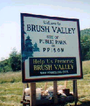

BVPA is not against development. The organization believes that Trout Run is more important to this community in its natural state and should not be developed for any reason. BVPA also does not believe
that Trout Run is the only site available for any type of develpment. In fact, currently Northumberland County has over 1,100 acres of available acreage for commercial/industrial development ( See for Yourself).
Millions of tax dollars have also been spent to prepare sites for industrial development. The most recent is the Seedco site in Coal Township where Reinhart Foods
relocated. Over 600 acres are available at this site where the infrastructure is in place and because it is designated a Keystone Opportunity Zone (KOZ), businesses sited there will pay significantly reduced taxes. So why destroy Trout Run when these sites are already available?!
When Trout Run was targed a few years ago for a federal prison, BVPA found an alternate site. Through intensive research with the cooperation of
DEP's Bureau of Mining & Reclamation and the Federal Office of Surface Mining, BVPA has viewed
mining and topographic maps, researched deeds and zoning issues and toured potential sites.
BVPA believes the Natalie East Site wass an acceptable alternative for a prison site. In fact, BVPA received a report from DEP documenting 195 acres of the site that is not undermined, refuting the BOP's claims once and for all that this site is not acceptable.

BVPA has researched possible sites not only for the Bureau of Prisons
but for future industrial development. BVPA would like to stress that undermined land can be
used for industrial development. Also, BVPA has been researching grants and other funding available for
recycling abandoned industrial sites.